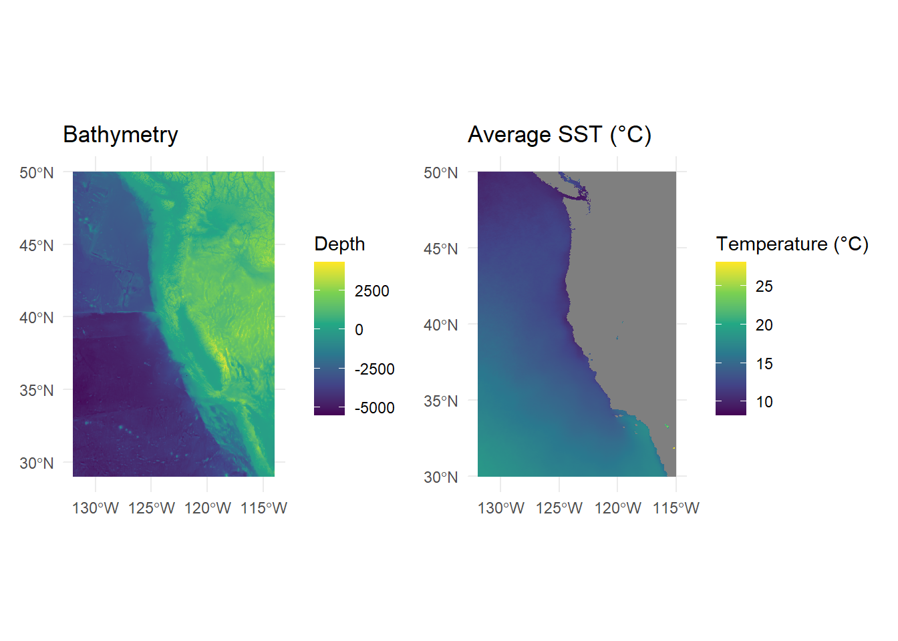
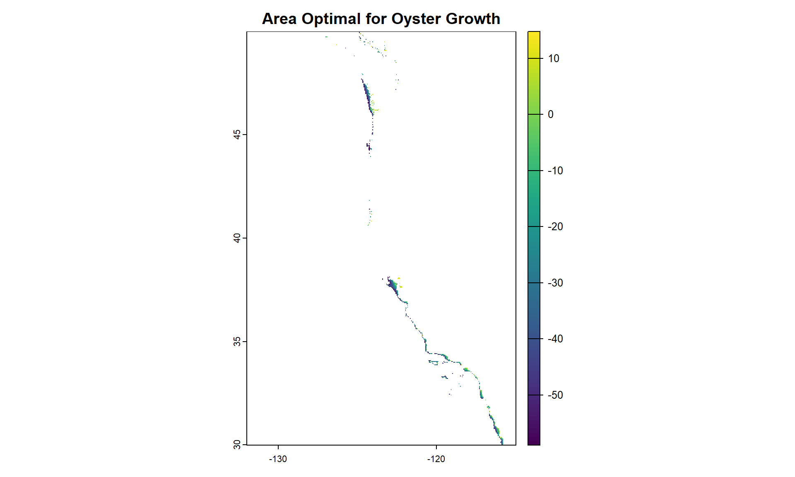
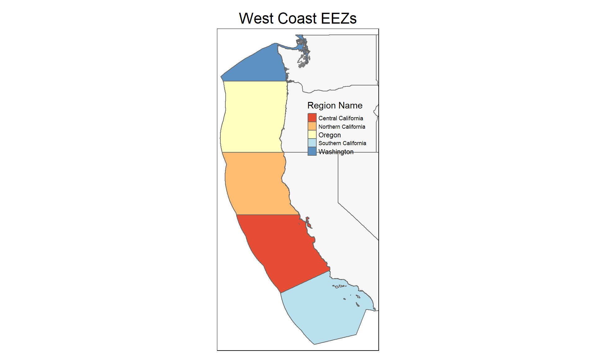

Prioritizing Potential Aquaculture Zones in Coastal California
EDS 223 Homework #4
Author
Bailey Jørgensen
Background
Marine aquaculture has the potential to play an important role in the global food supply as a more sustainable protein option than land-based meat production. Gentry et al. mapped the potential for marine aquaculture globally based on multiple constraints, including ship traffic, dissolved oxygen, and bottom depth. They found that global seafood demand could be met using less than 0.015% of the global ocean area.
For this analysis, I will determine which Exclusive Economic Zones (EEZ) on the West Coast of the United States are best suited to developing marine aquaculture for several species of oysters and (CHOOSE AN ANIMAL JORB). Suitable locations will be determined based on a range of suitable sea surface temperatures (SST) and depth values for the species.
Data on species depth and temperature requirements came from SeaLifeBase.
Data on sea surface temperatures came from NOAA’s 5km Daily Global Satellite Sea Surface Temperature Anomaly v3.1.
Bathymetry data came from the General Bathymetric Chart of the Oceans (GEBCO).
Data on Exclusive Economic Zones came from Marineregions.org.
Code
# Transform the CRS of the files to matchbathymetry <- terra::project(bathymetry, crs(sst_stack))maritime_boundaries <- maritime_boundaries %>%st_transform(crs =st_crs(bathymetry))# Confirm that the CRS transformed as expectedtest_that("The CRS of all data sets match", {expect_true(crs(sst_stack) ==crs(bathymetry) &&crs(bathymetry) ==crs(maritime_boundaries))})
Test passed 😸
Data Processing
In order to perform this analysis, the data must be processed. Specifically, I must ensure that the Sea Surface Temperature data and Depth data can be combined, since the data have different resolutions, extents, and positions.
Code
# Find the mean SST from 2008-2012 (eg create single raster of average SST...)sst_average <-mean(sst_stack)# Convert average SST from Kelvin to Celsius by subtracting 273.15sst_average_celsius <- sst_average -273.15
After some initial processing of the SST raster stack, I want to take a quick look at the the bathymetry and SST data, to see what further processing might need to be done.
I suspect that the resolutions of these raster objects do not match, so I run a quick check to see:
Code
# Check to see if the resolutions matchcat("Resolution of SST Average (°C):", res(sst_average_celsius)[1], "x", res(sst_average_celsius)[2], "\n")
Resolution of SST Average (°C): 0.04166185 x 0.04165702
Code
cat("Resolution of Bathymetry:", res(bathymetry)[1], "x", res(bathymetry)[2], "\n")
Resolution of Bathymetry: 0.004166667 x 0.004166667
This check confirms my suspicions, and I decide to resample the bathymetry data to match the resolution of the SST data, using the nearest neighbor approach. Once the resolutions and CRS of the data matches, I can crop the bathymetry raster to match the extent of the SST raster.
Code
# Resample the bathymetry data to match the resolution of the SST data using the nearest neighbor approachbathymetry_resampled <-resample(bathymetry, sst_stack, method ="near")# Verify the resultscat("Matched Resolution of SST Average (°C):", res(sst_average_celsius)[1], "x", res(sst_average_celsius)[2], "\n")
Matched Resolution of SST Average (°C): 0.04166185 x 0.04165702
Code
cat("Matched Resolution of Bathymetry:", res(bathymetry)[1], "x", res(bathymetry_resampled)[2], "\n")
Matched Resolution of Bathymetry: 0.004166667 x 0.04165702
Code
# Crop the bathymetry raster at lastbathymetry_cropped <-crop(bathymetry_resampled, sst_average_celsius)
Now, to verify that my processing thus far has been successful, I will run a series of tests. One way to know that the rasters match, is if they are able to be successfully stacked together. This code will test for stackability, and then I will finally stack the two together.
Code
# Check if the rasters have the same resolutionres_match <-all(res(bathymetry_cropped) ==res(sst_average_celsius))# Check if the rasters have the same extentextent_match <-ext(bathymetry_cropped) ==ext(sst_average_celsius)# Check if the rasters have the same CRScrs_match <-crs(bathymetry_cropped) ==crs(sst_average_celsius)# Print the resultscat("Resolution match:", res_match,"\n")
Resolution match: TRUE
Code
cat("Extent match:", extent_match,"\n")
Extent match: TRUE
Code
cat("CRS match:", crs_match,"\n")
CRS match: TRUE
Code
# Check if the rasters can be stackedif (res_match && extent_match && crs_match) {print("The rasters can be stacked. Aw yeah!")} else {print("The rasters cannot be stacked. Check your work!!!")}
[1] “The rasters can be stacked. Aw yeah!”
Code
# Finally, lets do it! Stack that raster!bathy_sst <-c(bathymetry_cropped, sst_average_celsius)
Oysters: A “Pearl-fect” Match
After the data is properly prepared and processed, I can begin the analysis to find suitable locations for marine aquaculture. This means finding locations that are suitable in terms of both SST and depth.
I will begin my analysis with oysters. Research has shown that oyster need the following conditions for optimal growth:
sea surface temperature: 11-30°C
depth: 0-70 meters below sea level
With this in mind, I will first reclassify the SST data to only include raster values that are between 11 and 30 degrees Celsius. Using a similar process, I will reclassify the depth data to only include values that are above 70 meters below sea level. Let’s see what that looks like:
Code
# Turn unneeded values to NAoptimal_sst <- sst_average_celsiusoptimal_sst[optimal_sst <11| optimal_sst >30] <-NA# Do it again for the bathymetry dataoptimal_bath <- bathymetry_croppedoptimal_bath[optimal_bath <-70| optimal_bath >0] <-NA# Plot optimal bathymetry rasterplot_optimal_bath <-ggplot() +geom_spatraster(data = optimal_bath) +scale_fill_viridis_c(name ="Depth (m)") +ggtitle("Optimal Depth (m) for Oysters") +theme_minimal()# Plot optimal SST rasterplot_optimal_sst <-ggplot() +geom_spatraster(data = optimal_sst) +scale_fill_viridis_c(name ="Temperature (°C)") +ggtitle("Optimal SST (°C) for Oysters") +theme_minimal()# Combine the plotsplot_optimal_bath + plot_optimal_sst

To find suitable locations for oyster marine aquaculture, we’ll need to find locations that are suitable in terms of both SST and depth. Let’s do it with code!
Code
# Use map algebra to find areas of overlapoverlap <-!is.na(optimal_sst) &!is.na(optimal_bath)big_optimal <- optimal_sst * overlap + optimal_bath * overlapplot(big_optimal, main ="Area Optimal for Oyster Growth")

The result we get is a map showing a relatively thin line representing the areas of the West Coast of the United States that have the most optimal conditions for oyster aquaculture.
Determine the most suitable EEZ (Exclusive Economic Zone) best suited for developing marine aquaculture for Oysters.
Now, its time to bring in our EEZ data, to determine which EEZs best overlap with our zones of optimal conditions for oysters.
First, lets take a look at the maritime boundaries data that we have.
Now the question remains: what percent of each EEZ region contains suitable area for oyster cultivation? Using the optimal oyster conditions we already calculated, as well as the EEZ information we have in our dataframe, we can calculate this.
Our final product is a map of visualizations thus far, and a nice table that presents the final numbers from our analysis.
Code
# Let's make a plot!# Map both raster data setsfinal_map <-tm_shape(maritime_boundaries) +tm_polygons(col ="rgn",palette ="Blues",alpha = .60,title ="Region Name") +tm_layout() +tm_shape(us_states) +tm_polygons(alpha = .20) +tm_shape(big_optimal) +tm_raster(legend.show =TRUE,title ="Total Suitable\nArea (km^2)",palette ="red",breaks =seq(0, 5, by =5),labels =" ") +tm_layout(main.title ="EEZs with Optimal\nOyster Habitat",main.title.position ="center",legend.outside =FALSE,legend.position =c(0.55, 0.50))print(final_map)

Code
# Rasterize the eez dataframe using the 'rgn' columneez_rast <- terra::rasterize(maritime_boundaries, big_optimal, field ="rgn")# Create dataframe that displays suitable area of each zonesuitable_area <- terra::expanse(big_optimal, unit ="km", zones = eez_rast)# Rename columnssuitable_area <- suitable_area %>%rename("suitable_area_km2"="area","rgn"="zone")# Calculate percent of each zone that contains suitable area for oyster aquaculture eez_oyster <- maritime_boundaries %>%left_join(suitable_area, by="rgn") %>%mutate(zone_pct = suitable_area_km2 / area_km2 *100) %>%select("rgn", "area_km2", "suitable_area_km2", "zone_pct") %>%st_drop_geometry()# Make a fun table that shows this estimatefinal_table <- eez_oyster |>gt() |>gt_theme_nytimes() |>tab_header(title ="EEZ Aquaculture Calculations") |>cols_label(rgn ="EEZ REgion",area_km2 ="Square Kilometers of EEZ",suitable_area_km2 ="Square Kilometers of Optimal Area",zone_pct ="Percentage of EEZ Suitable for Aquaculture" ) |>tab_style(style =cell_text(weight ="bold"),locations =cells_body() )final_table
EEZ Aquaculture Calculations
EEZ REgion
Square Kilometers of EEZ
Square Kilometers of Optimal Area
Percentage of EEZ Suitable for Aquaculture
Oregon
179994.06
1120.146
0.6223238
Northern California
164378.81
194.169
0.1181229
Central California
202738.33
4086.765
2.0157832
Southern California
206860.78
3882.136
1.8766904
Washington
66898.31
2452.143
3.6654784
Aquaculture made “Shrimple”
According to Boyd et. all, one of the most common species of shrimp harvested using aquaculture is Penaeus setiferus, or White Shrimp. According to SeaLifeBase, this shrimp species requires the following conditions for optimal growth:
sea surface temperature: 15.3-27.3°C
depth: 0-119 meters below sea level
I want to run the same analysis for shrimps, that I did for oysters. In order to do that, I will create a function that utilizes the same steps above, but would only require me to input the parameters of the analysis, and result in a comprehensive map and table.
First I will create the function, called optimal_aquaculture:
Code
optimal_aquaculture <-function(sst_data, bathy_data, eez_data, species, min_temp, max_temp, min_depth, max_depth) {# Transform the CRS of the files to match bathymetry <- terra::project(bathy_data, crs(sst_data)) maritime_boundaries <- eez_data %>%st_transform(crs =st_crs(bathymetry))# Confirm that the CRS transformed as expectedtest_that("The CRS of all data sets match", {expect_true(crs(sst_data) ==crs(bathymetry) &&crs(bathymetry) ==crs(maritime_boundaries)) })# Find the mean SST from 2008-2012 (e.g., create single raster of average SST) sst_average <-mean(sst_data)# Convert average SST from Kelvin to Celsius by subtracting 273.15 sst_average_celsius <- sst_average -273.15# Resample the bathymetry data to match the resolution of the SST data using the nearest neighbor approach bathymetry_resampled <-resample(bathymetry, sst_average_celsius, method ="near")test_that("The Resolutions of the Rasters match", {expect_true(res(bathymetry_resampled)[1] ==res(sst_average_celsius)[1]) && (res(bathymetry_resampled)[2] ==res(sst_average_celsius)[2]) })# Crop the bathymetry raster bathymetry_cropped <-crop(bathymetry_resampled, sst_average_celsius)test_that("The resolutions of the cropped rasters match", {expect_true(all(res(bathymetry_cropped) ==res(sst_average_celsius))) })test_that("The rasters have the same extent", {expect_true(ext(bathymetry_cropped) ==ext(sst_average_celsius)) })test_that("The rasters have the same CRS", {expect_true(crs(bathymetry_cropped) ==crs(sst_average_celsius)) })# As a final check, stack the rasters bathy_sst <-c(bathymetry_cropped, sst_average_celsius)# Turn unneeded values to NA optimal_sst <- sst_average_celsius optimal_sst[optimal_sst < min_temp | optimal_sst > max_temp] <-NA# Do it again for the bathymetry data optimal_bath <- bathymetry_cropped optimal_bath[optimal_bath < max_depth | optimal_bath > min_depth] <-NA# Use map algebra to find areas of overlap overlap <-!is.na(optimal_sst) &!is.na(optimal_bath) big_optimal <- optimal_sst * overlap + optimal_bath * overlap# Map both raster data sets final_map <-tm_shape(eez_data) +tm_polygons(col ="rgn",palette ="Blues",alpha = .60,title ="Region Name") +tm_layout() +tm_shape(us_states) +tm_polygons(alpha = .20) +tm_shape(big_optimal) +tm_raster(legend.show =TRUE,title ="Total Suitable\nArea (km^2)",palette ="red",breaks =seq(0, 5, by =5),labels =" ") +tm_layout(main.title =paste("West Coast EEZs with Optimal\n", species, " Habitat"),main.title.position ="center",legend.outside =FALSE,legend.position =c(0.55, 0.50))print(final_map)# Rasterize the EEZ dataframe using the 'rgn' column eez_rast <- terra::rasterize(eez_data, big_optimal, field ="rgn")# Create a dataframe that displays the suitable area of each zone suitable_area <- terra::expanse(big_optimal, unit ="km", zones = eez_rast)# Rename columns suitable_area <- suitable_area %>%rename("suitable_area_km2"="area","rgn"="zone")# Calculate the percent of each zone that contains suitable area for oyster aquaculture eez_species <- eez_data %>%left_join(suitable_area, by ="rgn") %>%mutate(zone_pct = suitable_area_km2 / area_km2 *100) %>%select("rgn", "area_km2", "suitable_area_km2", "zone_pct") %>%st_drop_geometry()# Create a table to show this estimate final_table <- eez_species |>gt() |>gt_theme_nytimes() |>tab_header(title =paste("EEZ Aquaculture Calculations for", species)) |>cols_label(rgn ="EEZ Region",area_km2 ="Square Kilometers of EEZ",suitable_area_km2 ="Square Kilometers of Optimal Area",zone_pct ="Percentage of EEZ Suitable for Aquaculture" ) |>tab_style(style =cell_text(weight ="bold"),locations =cells_body() )return(final_table)}
And then I will use it to run an analysis of optimal conditions for White Shrimp aquaculture:
Test passed 🥇
Test passed 🥇
Test passed 🎉
Test passed 🥳
Test passed 😸
EEZ Aquaculture Calculations for White Shrimp
EEZ Region
Square Kilometers of EEZ
Square Kilometers of Optimal Area
Percentage of EEZ Suitable for Aquaculture
Oregon
179994.06
NA
NA
Northern California
164378.81
NA
NA
Central California
202738.33
NA
NA
Southern California
206860.78
3292.186
1.591498
Washington
66898.31
NA
NA
Conclusion
Citations
Boyd, Claude E., and Jason W. Clay. “Shrimp Aquaculture and the Environment.” Scientific American 278, no. 6 (1998): 58–65. http://www.jstor.org/stable/26057855.